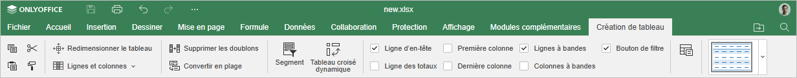
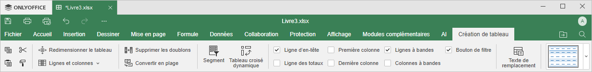

Onglet Création de tableau
L'onglet Création de tableau dans l'éditeur de classeurs permet de modifier des tableaux mis en forme des tableaux d'après un modèle.
À partir de la version 9.1 ONLYOFFICE Docs, l'onglet Création de tableau est masqué par défaut et ne s'affiche que si on travaille sur des tableaux.
Fenêtre de l'éditeur de classeurs en ligne:

Fenêtre de l'éditeur de classeurs de bureau:

En utilisant cet onglet, vous pouvez:
- redimensionner le tableau,
- gérer des lignes et des colonnes et l'affichage,
- supprimer les doublons,
- convertir en plage,
- insérer des segments,
- créer des tableaux croisés dynamiques,
- ajouter le titre et la description de remplacement,
- choisir l'un des styles de tableau prédéfinis.